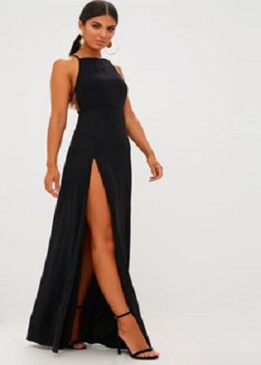
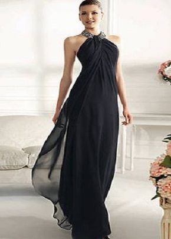
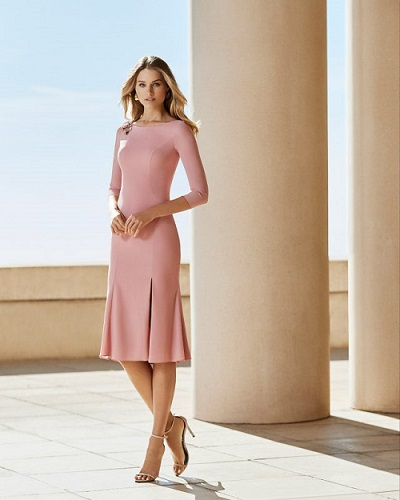
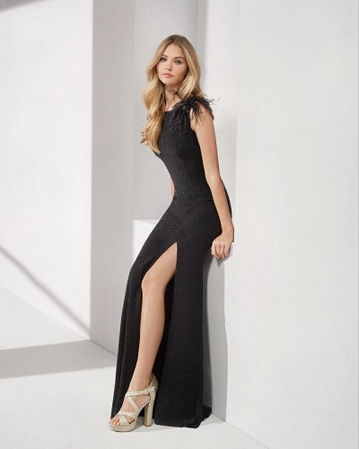
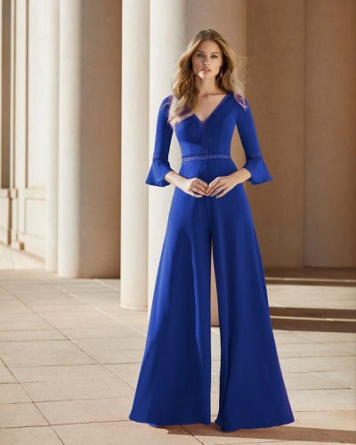

Fiesta
Con sus trajes de fiesta y cóctel, RGZ Alta Moda viste las ocasiones más especiales. Decisivamente, los vestidos rinden homenaje a la feminidad y a la elegancia, ofreciendo moda para aquellas invitadas que quieren lucir un look inmejorable en fiestas, celebraciones y eventos.
 

Vestidos de fiesta RGZ Alta Moda: para eventos de día y de noche
Por lo general, cuando las mujeres se encuentran ante una invitación a un acontecimiento especial, asalta la duda sobre cómo vestir. Generalmente, a menos que exista un dress code específico para la ocasión, el protocolo en cuestión dicta las claves de la vestimenta.
|  |  |  |
|---|---|---|
| Vestidos de fiesta cortos | Vestidos de fiesta largos | Vestidos de cóctel y monos |
| Entonces, ¿cuándo serán los mejores candidatos los vestidos de fiesta cortos? Generalmente en eventos diurnos que impliquen formalidad, tales como una entrega de premios, un acto de inauguración, un bautizo, una comunión o, lógicamente, una boda. Ahora bien, será determinante el largo de la falda: se aconseja que, como corta, llegue a la altura de la rodilla. | Los vestidos de fiesta largos serán aptos para festividades matinales, vespertinas y nocturnas, siendo más habitual en la mayoría de las culturas escogerlos para ocasiones que tengan lugar durante la tarde y en adelante. Y siempre serán los más indicados para los eventos de alto nivel ceremonial. | Los vestidos de cóctel y los monos de fiesta podrán llevarse tanto de día como de noche, en eventos que requieran cierta etiqueta. No obstante, no dejará de ser significativo que sean glamurosos y estén hechos con géneros de calidad, como todos los modelos de RGZ Alta moda. |